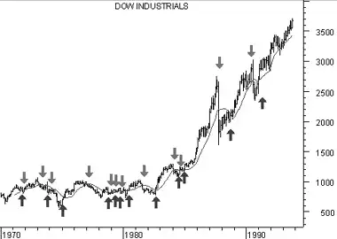
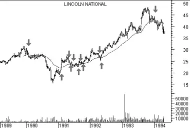
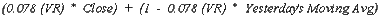

Moving Averages
Overview
A Moving Average is an indicator that shows the average value of a security's price over a period of time. When calculating a moving average, a mathematical analysis of the security's average value over a predetermined time period is made. As the security's price changes, its average price moves up or down.
There are five popular types of moving averages: simple (also referred to as arithmetic), exponential, triangular, variable, and weighted. Moving averages can be calculated on any data series including a security's open, high, low, close, volume, or another indicator. A moving average of another moving average is also common.
The only significant difference between the various types of moving averages is the weight assigned to the most recent data. Simple moving averages apply equal weight to the prices. Exponential and weighted averages apply more weight to recent prices. Triangular averages apply more weight to prices in the middle of the time period. And variable moving averages change the weighting based on the volatility of prices.
Interpretation
The most popular method of interpreting a moving average is to compare the relationship between a moving average of the security's price with the security's price itself. A buy signal is generated when the security's price rises above its moving average and a sell signal is generated when the security's price falls below its moving average.
The following chart shows the Dow Jones Industrial Average ("DJIA") from 1970 through 1993.

Also displayed is a 15-month simple moving average. "Buy" arrows were drawn when the DJIA's close rose above its moving average; "sell" arrows were drawn when it closed below its moving average.This type of moving average trading system is not intended to get you in at the exact bottom nor out at the exact top. Rather, it is designed to keep you in line with the security's price trend by buying shortly after the security's price bottoms and selling shortly after it tops.
The critical element in a moving average is the number of time periods used in calculating the average. When using hindsight, you can always find a moving average that would have been profitable (using a computer, I found that the optimum number of months in the preceding chart would have been 43). The key is to find a moving average that will be consistently profitable. The most popular moving average is the 39-week (or 200-day) moving average. This moving average has an excellent track record in timing the major (long-term) market cycles.
The length of a moving average should fit the market cycle you wish to follow. For example if you determine that a security has a 40-day peak to peak cycle, the ideal moving average length would be 21 days calculated using the following formula:

| Table 7 | |
| Trend | Moving Average |
| Very Short Term | 5-13 days |
| Short Term | 14-25 days |
| Minor Intermediate | 26-49 days |
| Intermediate | 50-100 days |
| Long Term | 100-200 days |
You can convert a daily moving average quantity into a weekly moving average quantity by dividing the number of days by 5 (e.g., a 200-day moving average is almost identical to a 40-week moving average). To convert a daily moving average quantity into a monthly quantity, divide the number of days by 21 (e.g., a 200-day moving average is very similar to a 9-month moving average, because there are approximately 21 trading days in a month).
Moving averages can also be calculated and plotted on indicators. The interpretation of an indicator's moving average is similar to the interpretation of a security's moving average: when the indicator rises above its moving average, it signifies a continued upward movement by the indicator; when the indicator falls below its moving average, it signifies a continued downward movement by the indicator.
Indicators which are especially well-suited for use with moving average penetration systems include the MACD, Price ROC, Momentum, and Stochastics.
Some indicators, such as short-term Stochastics, fluctuate so erratically that it is difficult to tell what their trend really is. By erasing the indicator and then plotting a moving average of the indica-tor, you can see the general trend of the indicator rather than its day-to-day fluctuations.
Whipsaws can be reduced, at the expense of slightly later signals, by plotting a short-term moving average (e.g., 2-10 day) of oscillating indicators such as the 12-day ROC, Stochas-tics, or the RSI. For example, rather than selling when the Stochastic Oscillator falls below 80, you might sell only when a 5-period moving average of the Stochastic Oscillator falls below 80.
Example
The following chart shows Lincoln National and its 39-week exponential moving average.
Although the moving average does not pinpoint the tops and bottoms perfectly, it does provide a good indication of the direction prices are trending.Calculation
The following sections explain how to calculate moving averages of a security's price using the various calculation techniques.
SimpleA simple, or arithmetic, moving average is calculated by adding the closing price of the security for a number of time periods (e.g., 12 days) and then dividing this total by the number of time periods. The result is the average price of the security over the time period. Simple moving averages give equal weight to each daily price.
For example, to calculate a 21-day moving average of IBM: First, you would add IBM's closing prices for the most recent 21 days. Next, you would divide that sum by 21; this would give you the average price of IBM over the preceding 21 days. You would plot this average price on the chart. You would perform the same calculation tomorrow: add up the previous 21 days' closing prices, divide by 21, and plot the resulting figure on the chart.

Where:

Exponential
An exponential (or exponentially weighted) moving average is calculated by applying a percentage of today's closing price to yesterday's moving average value. Exponential moving averages place more weight on recent prices.
For example, to calculate a 9% exponential moving average of IBM, you would first take today's closing price and multiply it by 9%. Next, you would add this product to the value of yesterday's moving average multiplied by 91% (100% - 9% = 91%).

Because most investors feel more comfortable working with time periods, rather than with percentages, the exponential percentage can be converted into an approximate number of days. For example, a 9% moving average is equal to a 21.2 time period (rounded to 21) exponential moving average.
The formula for converting exponential percentages to time periods is:

You can use the above formula to determine that a 9% moving average is equivalent to a 21-day exponential moving average:
The formula for converting time periods to exponential percentages is:

You can use the above formula to determine that a 21-day exponential moving average is actually a 9% moving average:
Triangular
Triangular moving averages place the majority of the weight on the middle portion of the price series. They are actually double-smoothed simple moving averages. The periods used in the simple moving averages varies depending on if you specify an odd or even number of time periods.
The following steps explain how to calculate a 12-period triangular moving average.
- Add 1 to the number of periods in the moving average (e.g., 12 plus 1 is 13).
- Divide the sum from Step #1 by 2 (e.g., 13 divided by 2 is 6.5).
- If the result of Step #2 contains a fractional portion, round the result up to the nearest integer (e.g., round 6.5 up to 7).
- Using the value from Step #3 (i.e., 7), calculate a simple moving average of the closing prices (i.e., a 7-period simple moving average).
- Again using the value from Step #3 (i.e., 7) calculate a simple moving average of the moving average calculated in Step #4 (i.e., a moving average of a moving average).
A variable moving average is an exponential moving average that automatically adjusts the smoothing percentage based on the volatility of the data series. The more volatile the data, the more sensitive the smoothing constant used in the moving average calculation. Sensitivity is increased by giving more weight given to the current data.
Most moving average calculation methods are unable to compensate for trading range versus trending markets. During trading ranges (when prices move sideways in a narrow range) shorter term moving averages tend to produce numerous false signals. In trending markets (when prices move up or down over an extended period) longer term moving averages are slow to react to reversals in trend. By automatically adjusting the smoothing constant, a variable moving average is able to adjust its sensitivity, allowing it to perform better in both types of markets.
A variable moving average is calculated as follows:

Where:

Different indicators have been used for the Volatility Ratio. I use a ratio of the VHF indicator compared to the VHF indicator 12 periods ago. The higher this ratio, the "trendier" the market, thereby increasing the sensitivity of the moving average.
The variable moving average was defined by Tushar Chande in an article that appeared in Technical Analysis of Stocks and Commodities in March, 1992.
Weighted
A weighted moving average is designed to put more weight on recent data and less weight on past data. A weighted moving average is calculated by multiplying each of the previous day's data by a weight. The following table shows the calculation of a 5-day weighted moving average.| Table 8 | |||||||||
| 5-day Weighted moving average | |||||||||
| Day # | Weight | Price | Weighted | Average | |||||
| 1 | 1 | * | 25.00 | = | 25.00 | ||||
| 2 | 2 | * | 26.00 | = | 52.00 | ||||
| 3 | 3 | * | 28.00 | = | 84.00 | ||||
| 4 | 4 | * | 25.00 | = | 100.00 | ||||
| 5 | 5 | * | 29.00 | = | 145.00 | ||||
| Totals: | 15 | * | 133.00 | = | 406.00 | / | 15 | = | 27.067 |
The weight is based on the number of days in the moving average. In the above example, the weight on the first day is 1.0 while the value on the most recent day is 5.0. This gives five times more weight to today's price than the price five days ago.
The following chart displays 25-day moving averages using the simple, exponential, weighted, triangular, and variable methods of calculation.